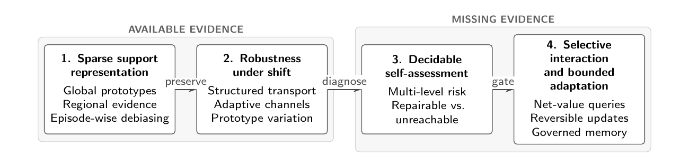
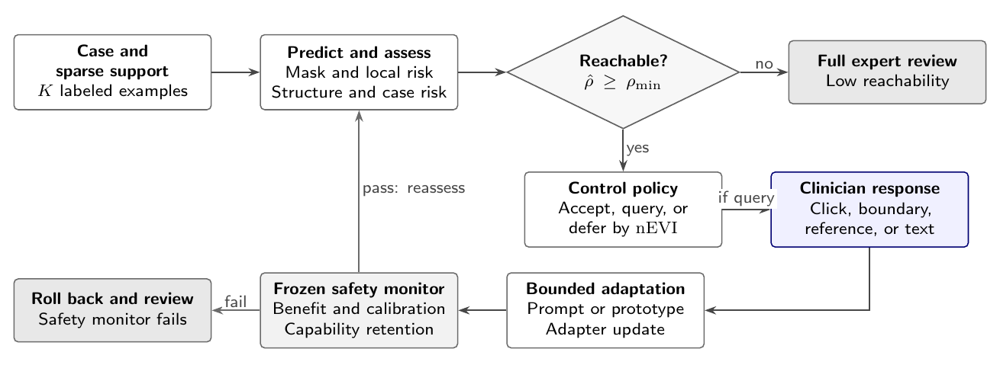
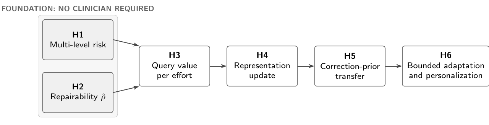

Decidable self-assessment
Separate low-risk outputs, correctable failures, and failures outside the reachable set under the remaining interaction budget.
Output: accept, query, or defer
Perspective paper · arXiv:2609.10001 · v2
Decidable Self-Assessment as the Precondition for Interaction and Adaptation
Central claim
Scarce expert attention should be spent only where a bounded intervention is expected to reach a clinically better outcome.
Conventional few-shot medical image segmentation asks how much can be learned from a small support set. Cross-domain FSMIS asks whether that evidence transfers to unfamiliar acquisition domains. Both improve the evidence already available to the model.
Rare, ambiguous, and shifted cases expose a different problem: the decisive evidence may be missing. Before asking a clinician or changing itself, the system must determine whether a permitted intervention can plausibly repair the case.
A strict dependency order
Promptable interfaces make interaction possible. Adaptation mechanisms make rapid change possible. Neither establishes when asking or changing is warranted.
Separate low-risk outputs, correctable failures, and failures outside the reachable set under the remaining interaction budget.
Output: accept, query, or defer
Treat clinician time as a distinct, limited resource. Select clicks, boundary edits, reference cases, or text only when response-conditioned value exceeds burden.
Virtue: parsimony
Update approved components within a trust region, reassess with an independent safety monitor, and roll back when benefit or capability retention fails.
Virtue: reversibility
Conceptual trajectory
Sparse support representation and cross-domain robustness improve what the support set retains. Decidable self-assessment governs what happens when the evidence needed for a reliable decision is absent.

Selective interactive adaptation
A foundation model can provide the representation and prompt interface, while a separate controller governs interaction, stopping, reassessment, and rollback.

Two memory horizons
Layer A · per-case episode
Support examples, confirmed masks, and interaction history remain local to the episode. Updates are bounded, reversible, and discarded after the case unless separately admitted.
Layer B · cross-case experience
What transfers across rare cases is not a disease-specific mask prior, but a reproducible correction prior over failure modes, gated by cross-reader agreement and governance.
Falsifiable research program
The program is sequentially abandonable. If multi-level risk and repairability cannot be validated without clinicians, downstream interaction and adaptation claims should not proceed.

Abstract
Few-shot medical image segmentation seeks to delineate unseen structures from a small support set, but its standard formulation fixes task-defining evidence before inference. This assumption is fragile under acquisition shift, atypical pathology, ambiguous boundaries, and poor image quality. Adding clinician interaction and rapid adaptation is not sufficient: the binding constraint is deciding when asking or changing is warranted.
We reframe FSMIS as a three-layer sequential decision problem. Decidable self-assessment separates errors that a bounded intervention can repair from those no admissible intervention can reach. Selective interaction allocates a distinct expert-attention budget by response-conditioned net expected value of information. Bounded adaptation emphasizes reversibility and independent safety reassessment rather than speed.
A complementary cross-case memory stores reproducible correction priors over failure modes rather than disease-specific mask priors. The framework links sparse support representation, cross-domain robustness, multi-level risk estimation, clinician feedback, and governed experience transfer. Six hypotheses and a minimal pilot make the foundational self-assessment claim falsifiable before a clinician study.
Citation
The paper is available as arXiv:2609.10001 in Computer Vision and Pattern Recognition.
@article{zhu2026clinicianloop,
title={From Few-Shot Segmentation to Clinician-in-the-Loop Medical Image Analysis: Decidable Self-Assessment as the Precondition for Interaction and Adaptation},
author={Zhu, Yazhou},
journal={arXiv preprint arXiv:2609.10001},
year={2026}
}